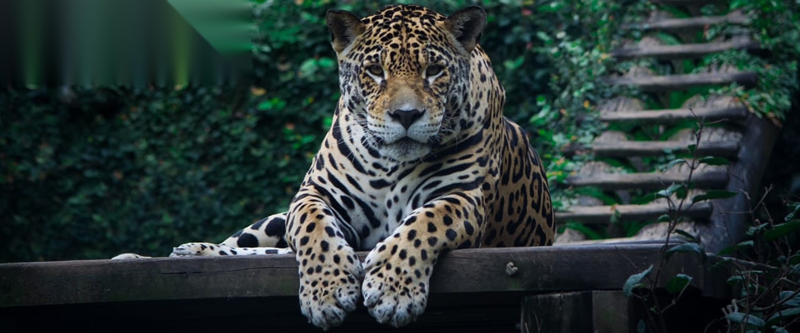

O Zoológico Municipal de Guarulhos, criado em 1981, mantém cerca de 400 animais de 100 diferentes espécies, priorizando a fauna nacional com 91% das espécies do plantel sendo nativas.
O ZooGuarulhos participa de programas de conservação de espécies ameaçadas, bem-estar animal, realiza pesquisas científicas e atividades de educação para conservação da biodiversidade. Os animais recebem cuidados constantes, tanto preventivos como curativos, por uma equipe de biólogos, veterinários e tratadores, incumbidos na manutenção de sua saúde e bem estar.
✅ 400 animais no plantel
✅ 100 espécies diferentes
✅ aproximadamente 95% são animais da fauna brasileira
Assista esse vídeo e conheça um pouco do zoológico de guarulhos.